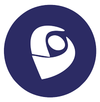

Olá! Meu nome é Ana Beatriz, tenho 20 anos e sou estudante de
Engenharia da Computação pela Universidade CEUMA.
Antes disso, cursei três períodos de Arquitetura na UEMA, experiência que
contribuiu bastante para o meu olhar voltado ao design.
Desde cedo me interesso por tecnologia —
comecei a aprender Photoshop aos 13 anos e, desde então,
desenvolvi uma grande paixão pela área de design digital.
Escolhi a Engenharia da Computação justamente por unir esse interesse pela
tecnologia com o desejo de trabalhar com design, especialmente nas áreas
de UI e UX. Recentemente, iniciei o curso da InCode com o objetivo de ter
um contato mais direto com a programação logo no começo da graduação e
explorar as oportunidades que essa experiência pode me proporcionar,
inclusive com a equipe.
Aqui estão links para o meu Linkedin e meu currículo Lattes!